I'm Yilin.
I'm just passionate about design, and the reasons why it matters.
I believe that
"the essence of technology is by no means anything technological."
And that addressing challenges within the built environment requires responsive and meaningful conversations between different parties.


Why do people buy in flood risk areas?
Identify vulnerability
In New York City, approximately 25% of all residential buildings are vulnerable to future flooding, particularly in low-lying areas and those with basements below street level.
Of these, a significant portion are located in river basin flood plains, susceptible to fluvial flooding from heavy rainfall or snowmelt. Coastal flood plains properties are prone to coastal flooding, exacerbated by high tides, rising sea levels and storm surges, and tends to cause more extensive damage compared to riverine flooding.
Then why does all of this matter?
How can these results help anyone?
What kind of conversation is fundamentally engaging?
Does it even make sense in practice, to real people?


Initial Considerations
I am in my 30s and moved to New York a few years ago for work. After working in NY, I decided to settle down and invest in a property for my family.
I wanted my children to study in New York, and I trust the recommendations of those close to me. I am looking into neighborhoods that are safe and familiar to me. My key considerations are how far the property is from my job, my kids' school, and everyday amenities.

 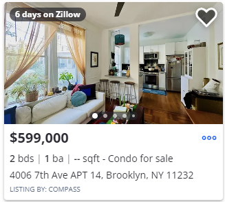
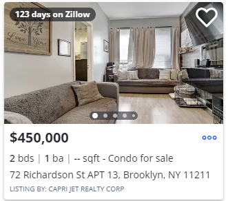
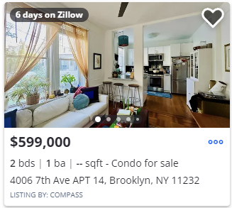
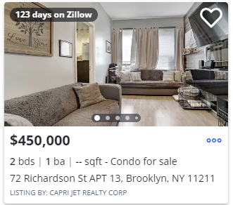

 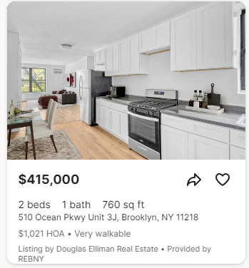
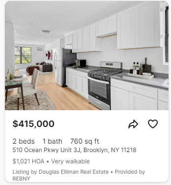

Then, I looked at available listings to see which ones fall within my budget. I focused on properties that are recently built, require less refurbishing, and have potential for appreciation in value.
 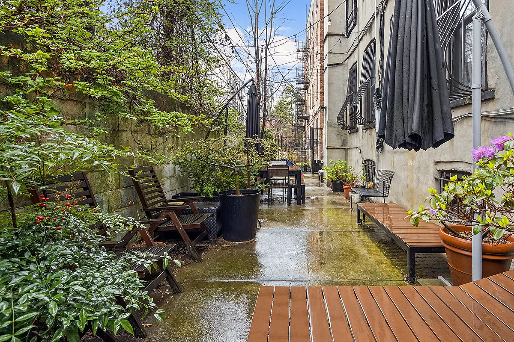
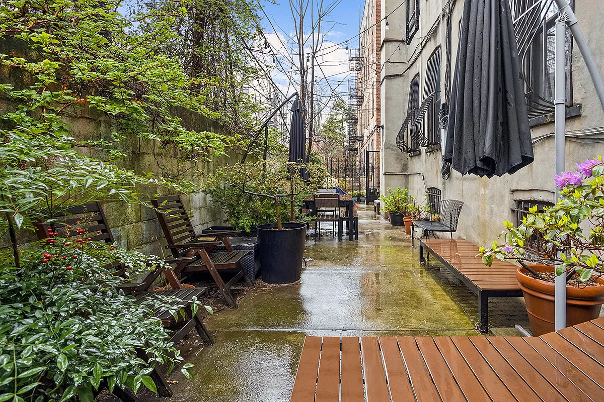


 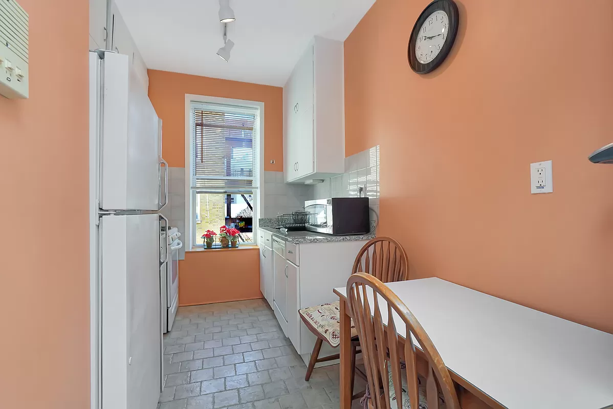
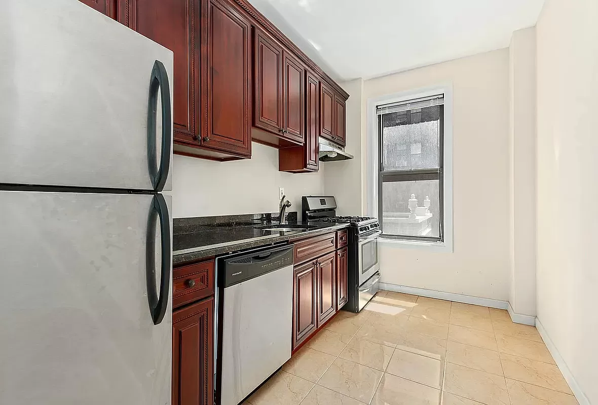
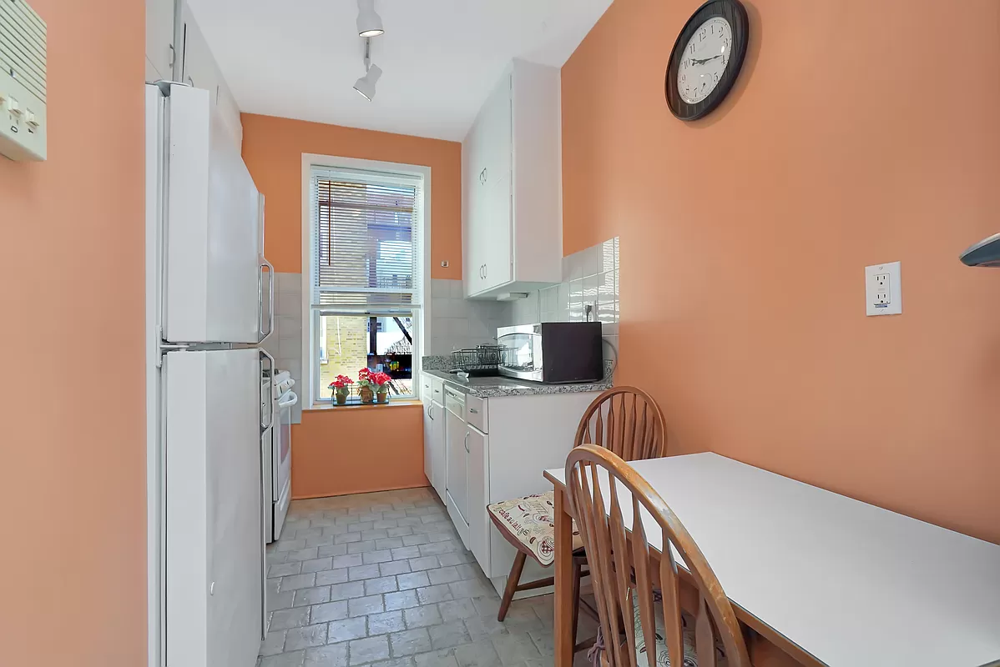
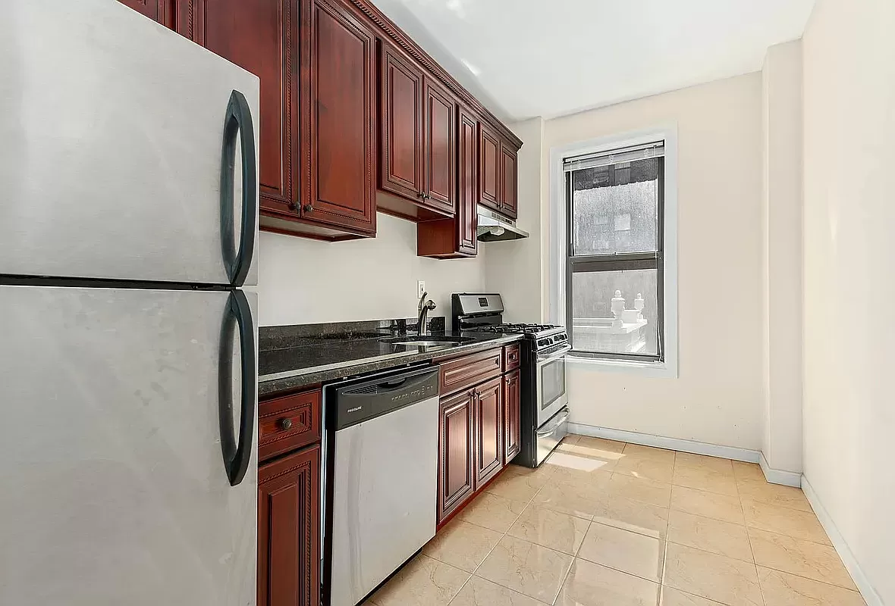
 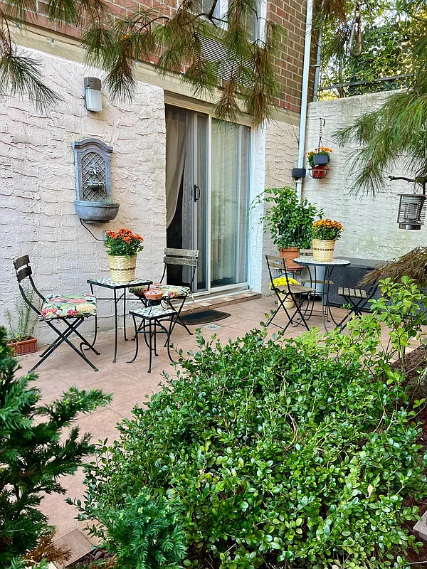
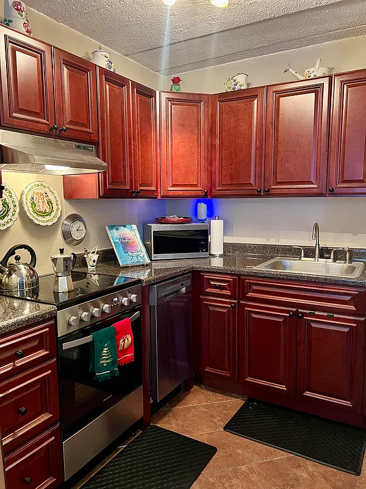
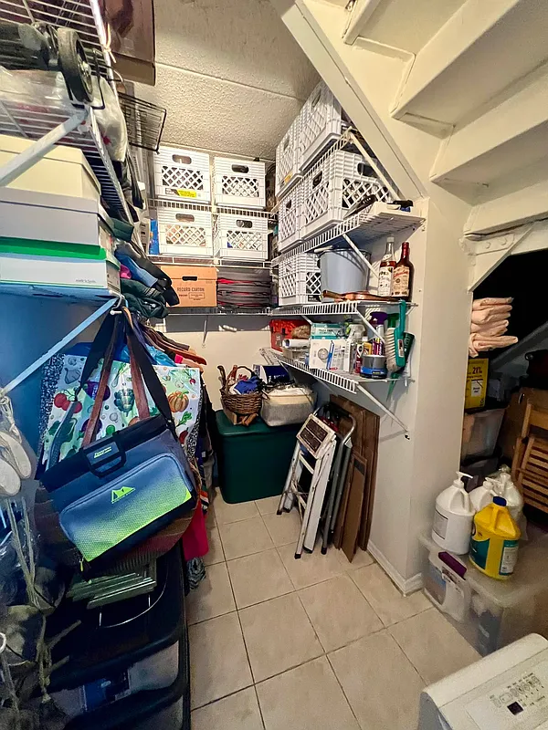
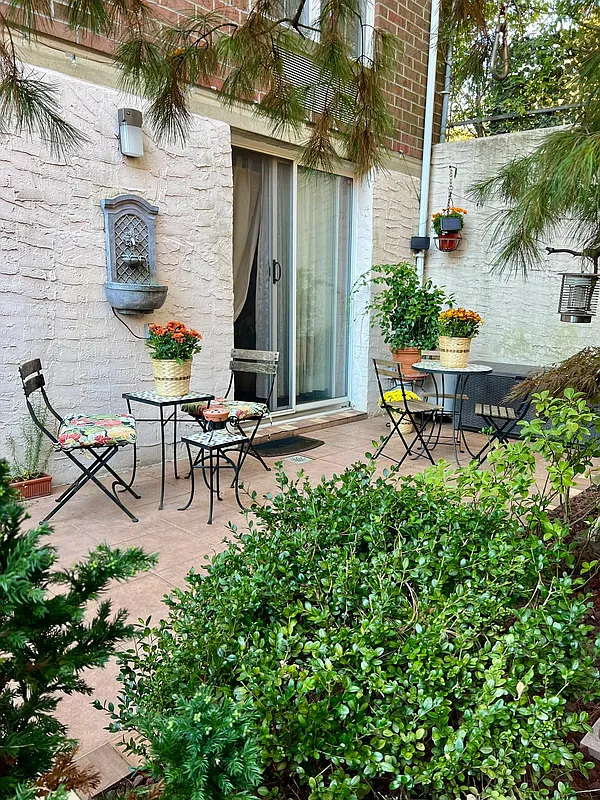
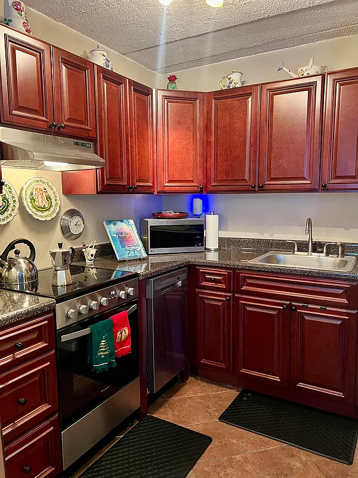
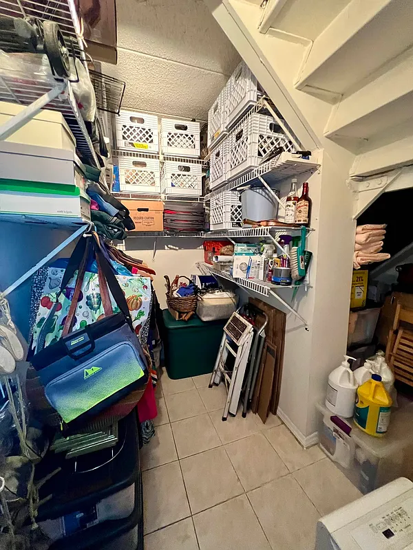
While narrowing down my options, I want to consider mortgage premiums and insurance premiums. Given the current interest rate, what can I afford? How much do I have set aside for the down payment, insurance, new furniture, moving costs, and renovations? How many days will I need to miss work for the relocation? And what will be the total interest I will need to pay?
Finally, if my property is in a flood risk area. Can I tolerate the risk of flooding given my financial situation and insurance coverage? I plan to consult with friends and a real estate agent before making this significant purchase.
"Individuals and firms often make decisions based on imperfect information and limited cognitive capacity, which can lead to outcomes that are not socially optimal. This bounded rationality challenges the assumptions of perfect rationality that underpin many economic models and policy recommendations."
— Joseph Stiglitz, "Information and the Change in the Paradigm in Economics"